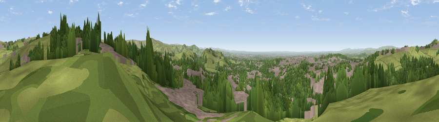

Viewpoint near Scouthead
#6087 in England · top 4% of its area beats it · near ScoutheadThe view, rendered

A 360° render of this exact spot computed from the terrain model, tree cover and land cover — summer colours, afternoon light, calibrated against photographs of famous viewpoints. Real trees, hedges and buildings will differ in detail.
The panorama
Grey silhouette: terrain skyline in each direction (720 bearings, Earth curvature and refraction included). Dashed green: skyline with trees (+15 m) and buildings (+8 m) as obstacles. Blue strip: how far the ground is visible on each bearing.
Where the view opens
Wedge length = distance to the farthest visible ground on that bearing (vegetation-aware). Rings at 10, 25 and 50 km.
What fills the view
39% grassland · 31% woodland · 29% built-up · 1% bare ground
Angular shares of the visible panorama (visual magnitude), not map area. Landscape diversity 0.51 (0–1 Shannon).
Key numbers
More beautiful places nearby
The staircase of upgrades: each row has a higher view potential than everything closer. Driving times are estimates from straight-line distance, calibrated against real road routing — check an actual route before setting out.
| Place | Direction | Drive | Score |
|---|---|---|---|
| Viewpoint near Shaw | N · 2 km | ~6 min | 72.9 |
| Viewpoint near Carrbrook | SE · 5 km | ~11 min | 74.0 |
| Viewpoint near Greenfield | SE · 5 km | ~11 min | 76.0 |
| Viewpoint near Carrbrook | SSE · 7 km | ~14 min | 77.1 |
| Viewpoint near Edenfield | NW · 19 km | ~32 min | 77.5 |
| White Brow | WNW · 30 km | ~48 min | 82.9 |
| Warton Crag | NW · 82 km | ~106 min | 83.2 |
| Viewpoint near Grange-over-Sands | NW · 92 km | ~116 min | 83.4 |
53.54859, -2.06260 · source: screening · position refined by local search. Computed location — check access rights before visiting.